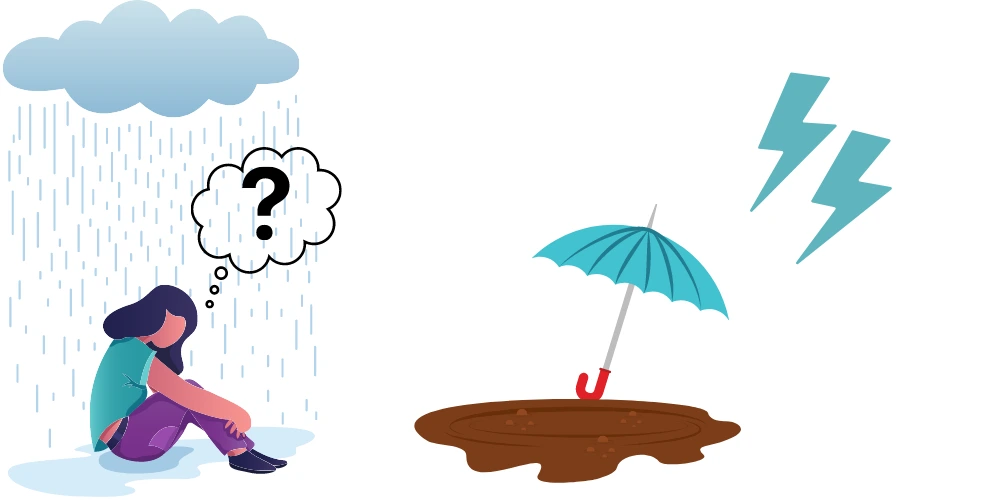
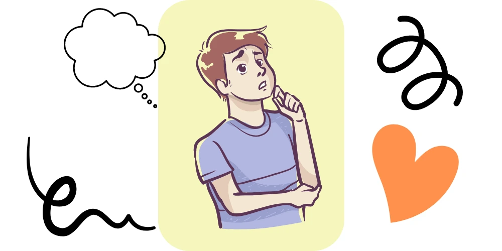

Depression is a mental health illness that affects millions of people globally. It comes with a deep feeling of sadness and helplessness that makes it difficult to do anything. You may wake up feeling tired with little or no interest to do the things you once loved to do. Depression does not only affect how we feel, but it can also affect how we think and cause memory loss. In this article, let’s learn whether memory loss is a sign of depression and memory loss is due to depression?

The Link between Depression and Memory Loss
Many psychiatrists and psychologists see several patients struggling with depression. The patients have complained about trouble finding their keys or remembering their appointment dates and etc. Some may even forget a piece of information they have just received.
While we all forget things every now and then, in depression, it gets even more common. This led to research into memory loss as an effect of depression.
A 2014 study analysed memory and negative cognition in two groups of people: a group of people who were formerly depressed and another group of people who had never been depressed. The study revealed that people who had been depressed in the past were better at remembering negative words from a list of words presented to them than the group who had never been depressed.
A 2007 study also found that depressed people feel worse when asked to recall positive memories. This may reflect the dominant-negative twist in people with depression. Depressed people remember negative events much more than they remember positive events. They also remember negative events more than non-depressed people. The reason, as some psychologists describe is the limiting in their positive twists.
Other factors of Depression and Memory loss
These findings give some insight into how memory works in people with depression. The area of the brain that controls learning and memory ( the hippocampus ) tends to be smaller in people with depression. Accordingly, perhaps the volume of data these people can remember reduces. However, researchers are yet to understand why this memory loss affects positive memories mostly.
“Is memory loss a sign of depression?” Stress and anxiety can also lead to poor memory. But generally, depression only affects short-term memory, such as where you kept your wristwatch. But it does not affect other types of memory including long-term memory and procedural memory. However, Depression has been linked to memory problems, such as carelessness or confusion.
Memory loss in depression may also be partly caused by other factors including ageing, alcoholism, drug abuse, traumatic brain injury, vitamin B-12 deficiency and also as a side effect of medications, you use. Anxiety in depressed people may also cause memory loss.

How to Manage Memory Loss in Depression
Memory loss due to depression can be helped with counselling and the use of your antidepressants, by way of treating the underlying depression. Your doctor may also prescribe certain medications to improve your memory if it is caused by other illnesses. Furthermore, adopting these lifestyle changes will also help improve your memory:
1. Stay Organised
You are more likely to forget where you left objects in your home if you leave them in a mess. The same goes for your mind. If you do not note down appointment dates, task timelines, or other events in a special notebook, you might forget them easily.
Keep things in your house in an organised manner. Also, keep “to-do” lists of upcoming tasks and check off items you have completed. Furthermore, set aside a particular section in your home where you keep your wallet, keys, books, and other things so you can reach them easily.
2. Get Physically Active
Exercise not only improves your mood but also boosts your brain performance. This includes your memory too.
Adults should have at least 150 minutes of reasonable aerobic exercise, including brisk walking, in a week or 75 minutes of vigorous aerobic activity, such as jogging, every week.
3. Stay Mentally Active
Just as physical activity sharpens your body and mind, mental activity also keeps your mind sharp. Do mentally stimulating games such as bridge and crossword puzzles. You may also do grounding techniques to keep your mind at the present moment.
Learn new things also. Take a different route to work, take a course online, read a new book or article daily. The activities not only create new connections in your brain but combine previously formed connections.
4. Get Enough Sleep
Sleep is when the brain arranges what we have learnt during the day and makes necessary repairs and reconnections. Little wonder, lack of sleep is associated with memory loss and poor brain performance.
Most adults need 6-8 hours of sleep every day. Therefore, you should make sure to get this amount of sleep as a priority to keep your brain at peak performance. Lack of sleep can also make it harder to recover from depression.
Memory loss due to is a common complication affecting many people. The key steps you can take now to getting your memory back in shape are staying organised and being mentally and physically active. Therefore, this can helps to reduce worry and get you feeling better soon.
Check out the following video where we explore how depression impact memory. We touch on the different types of memory, causes of memory loss due to depression, whether memory loss is a sign of depression and suggest some general tips to help.